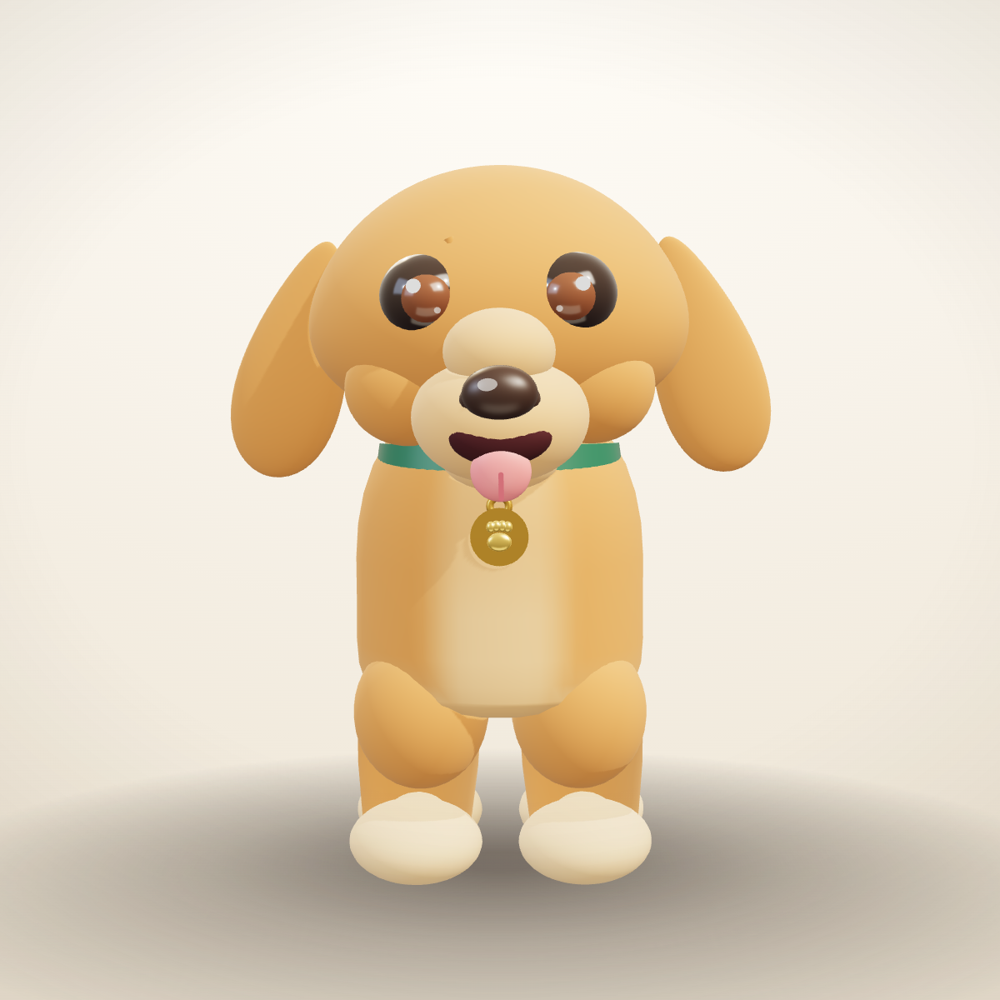
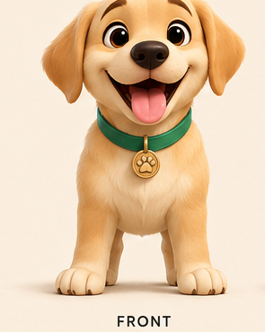
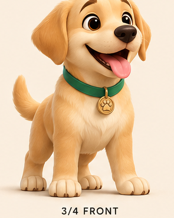
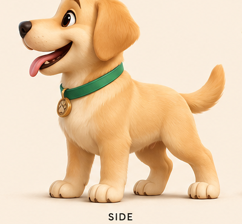
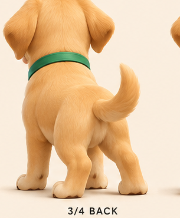
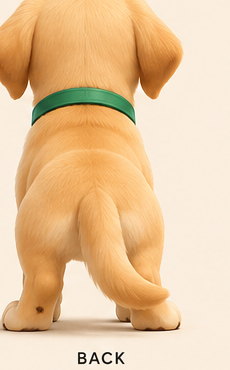
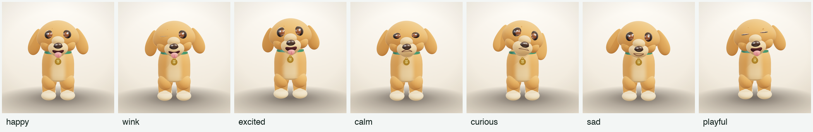
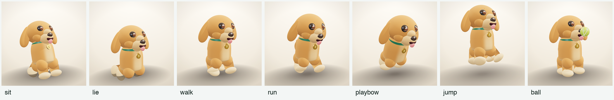
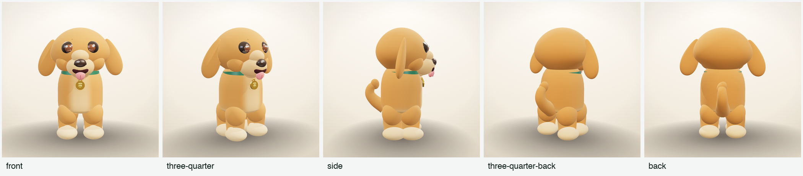

A procedural, rig-ready mascot sculpted from a single character sheet. Five angles read, seven moods and seven actions rebuilt as live parameters, then assembled into one three-dimensional character you can orbit, boop and pose.

Built entirely from code — no mesh imports. Every part is a sculpted primitive with its own proportion constants, so the whole pup can be re-tuned from one spec block.
Rather than eyeballing the proportions, the front view was thresholded off the paper and sampled every 5 % of its height. The two bumps — ears at 20 %, chest at 55 % — and the sharp pinch at 35 % are what set the skull width, the neck and the barrel body.





Eight passes, each one a gate. Click a stage to see what it changed and what it cost.
All seven moods from the sheet, driven by springs rather than keyframes — eyes, brows, mouth, tongue, ears and tail all settle with weight.

Each pose re-aims the four limb pivots, the body pitch and the root height, so the same rig reads as sitting, running or mid-air.


Where this build is strong, and where it still needs another pass. Nothing here is padded — the low scores are the next work items.
Nothing is wired into the shipping cast yet — this is the review gate.
“Sunny” is a placeholder pulled from the coat colour. One or two lines of character brief would let the moods get specific instead of generic.
The muzzle is still a soft oval and the eyes want real lids. Surface fur grain and a proper brow ridge are the two biggest remaining wins.
Add to the mascot registry, mount on the site stage, and record a short mood loop. Waiting on your sign-off.